Very
long ribbon worm
Baseodiscus delineatus*
Family
Valenciniidae
updated
Oct 2019
Where
seen? This amazingly long ribbon worm is sometimes seen
in coral rubble areas on our Southern shores. Sometimes several are
seen on the same visit!
Features: About 40cm to more than
1m long. White to cream body, with five or more blue or black stripes
along the entire length of the body.
It is often seen oozing about, purposefully but not quickly. It never
seems to be in a hurry and doesn't retract immediately into a hiding
place even when a visitor splashes about near it. |

Pulau Sudong,
Dec 09 |
 Pulau Sudong,
Dec 09
Pulau Sudong,
Dec 09 |
*Tentative
identification. Species are difficult to positively identify without close
examination.
On this website, they are grouped by external features for convenience of
display.
| Very
long ribbon worms on Singapore shores |
| Other sightings on Singapore shores |
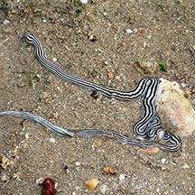
Sentosa Serapong, May 17
Photo shared by
Abel Yeo on facebook. |
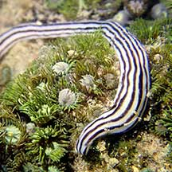
Pulau Tekukor, Aug 21
Photo
shared by Jianlin Liu on facebook |
|
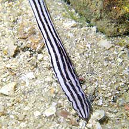
St John's Island, Oct 20
Photo
shared by Jianlin Liu on facebook. |
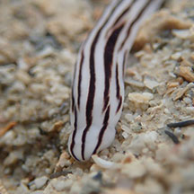
Lazarus, Feb 19
Photo
shared by Jianlin Liu on facebook. |
|
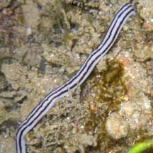
Sisters Island, May 09
Photo
shared by Loh Kok Sheng on his
blog. |
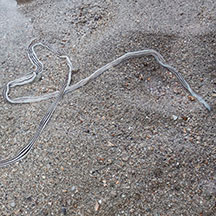
Big Sisters Island, Feb 25
Photo shared by Richard Kuah on facebook. |
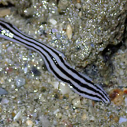
Small Sisters Island, Oct 25
Photo shared by Tammy Lim on facebook. |
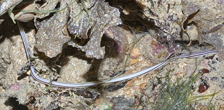
Sisters Island, Dec 10
Photo
shared by James Koh on his
blog. |
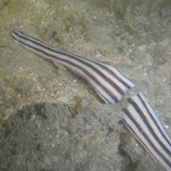
Little Sisters Island, Feb 15
Photo
shared by Toh Chay Hoon on facebook. |
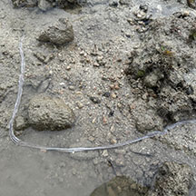
Pulau Hantu, Oct 24
Photo shared by Tammy Lim on facebook. |
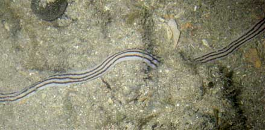
Pulau Hantu, Jul 10
Photo
shared by Toh Chay Hoon on her
blog. |
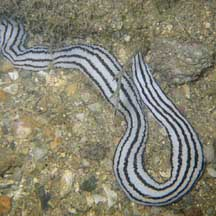
Cyrene Reef, Jun 10
Photo
shared by Loh Kok Sheng on his flickr. |
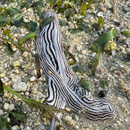
Cyrene, Jul 25
Photo shared by Tammy Lim on facebook. |
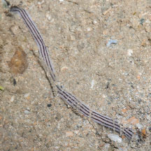
Pulau Semakau East, Feb 26
Photo shared by Marcus Ng on facebook. |
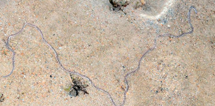
Pulau Semakau East, Jan 16
Photo shared by Loh Kok Sheng on facebook. |
|
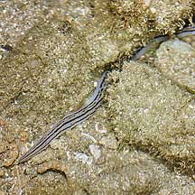
Pulau Semakau, Nov 09
Photo
shared by James Koh on his
blog. |
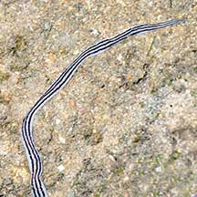
Pulau Semakau South, Oct 20
Photo
shared by Loh Kok Sheng on facebook. |
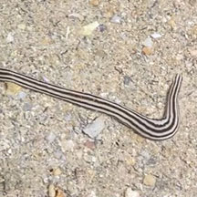
Pulau Semakau North, Sep 23
Photo
shared by Kelvin Yong on facebook. |
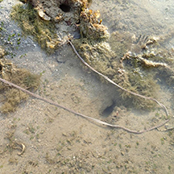
Beting Bemban Besar, Mar 17
Photo
shared by Richard Kuah on facebook. |
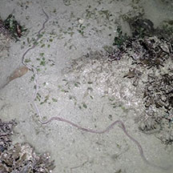
Terumbu Raya, Jun 20
Photo
shared by Vincent Choo on facebook. |
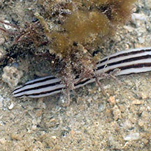
Terumbu Bemban, Jul 18
Photo
shared by Liz Lim on facebook. |
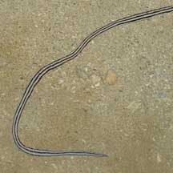
Terumbu Pempang Darat, Jun 10 |
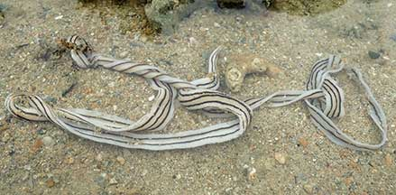
Terumbu Pempang Laut, Jan 22
Photo
shared by Vincent Choo on facebook. |
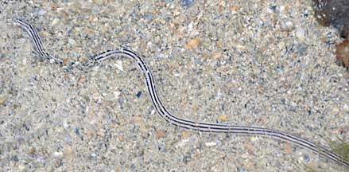
Terumbu
Berkas, Jan 10 |
|
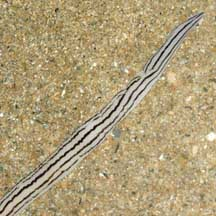
Pulau Pawai, Dec 09
Photo
shared by Loh Kok Sheng on his
flickr. |
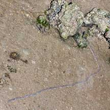
Pulau Pawai, Dec 09
Photo
shared by James Koh on his
flickr. |
|
Terumbu Pempang
Tengah, Nov 18
|
|
Acknowledgement
With grateful thanks to Leslie H. Harris of the Natural
History Museum of Los Angeles County for comments on the ID
of this worm.
Links
References
- Gosliner,
Terrence M., David W. Behrens and Gary C. Williams. 1996. Coral
Reef Animals of the Indo-Pacific: Animal life from Africa to Hawaii exclusive of the vertebrates
Sea Challengers. 314pp.
- Humann, Paul
and Ned Deloach. 2010. Reef
Creature Identification: Tropical Pacific New World Publications.
497pp.
- Kuiter, Rudie
H and Helmut Debelius. 2009. World
Atlas of Marine Fauna. IKAN-Unterwasserachiv. 723pp.
|
|
|